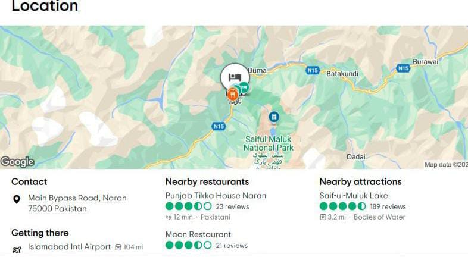

Book Our Naran Kaghan tour packages 2024, and enjoy the mind-blowing itineraries in Naran Kaghan valley. We also offer an experienced guide for the Naran Kaghan tour. Explore the beauty of Naran Kaghan with peace of mind. If you looking for a Honeymoon Naran Kaghan tour, we are here to serve you as well.
Hotel One Naran is set in Naran. Among the facilities at this property are a 24-hour front desk and room service, along with free WiFi throughout the property. Private parking can be arranged at an extra charge. The units in the hotel are equipped with a flat-screen TV. At Hotel One Naran all rooms come with a private bathroom. Guests at the accommodation can enjoy a buffet breakfast.
Contact Main Bypass Road, Naran 75000 Pakistan
Nearby restaurants Punjab Tikka House Naran
Nearby attractions Saif-ul-Muluk Lake